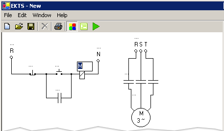
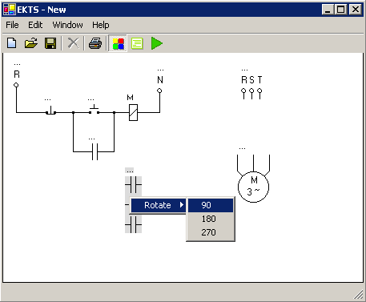
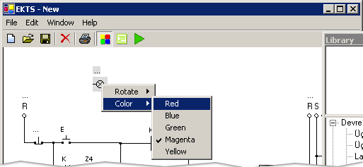

[prew] [next]
Working with Elements
Add Element to Drawing Panel
To add element to the drawing panel:
- Select element from Library window.
- Double click on selected element.
Move Elements
Press left mouse button on the element, drag to the destination position and then release the button.
Name Elements
To name the elements:
- Click on the label located on top of the element.
- Type the name in text box, like shown in Figure 4, or select name from combo box.
- Click outside of text box or combo box.
Relays and time relay names must be unique. Contacts are named according to the Relays and time relays used in the circuit. To specify counter values for time relays use same steps.

Figure 4 Give a name to a relay.
Move Labels of Elements
To move labels of the elements:
- Select element by clicking left mouse button.
- Drag grayed label, by pressing on it, to the desired location.
When elements moved, element name and counter labels are move together. Counter labels of time relays are moved the same way as name labels.
Rotate Elements
To rotate elements:
- Click right mouse button on the element.
- Select rotation angle from opened context menu as shown in Figure 5.
Connection lines recreated when rotating elements.

Figure 5 Context menu used to rotate elements.
Specify Color of Lamp
To specify color of the lamp:
- Click right mouse button on the lamp.
- Select color form Color submenu of opened context menu as shown in the Figure 6.

Figure 6 Color menu used to specify color of the lamp.
Delete Element
To delete the element:
- Select element by clicking left mouse button on the element.
- Click on delete
 button located on tool bar or press delete key from keyboard.
button located on tool bar or press delete key from keyboard.
Connection lines deleted with elements.